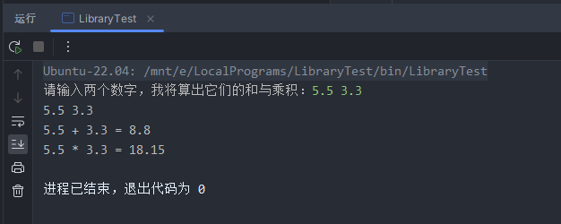

简介
本文的组成
环境及其编码区别
静态链接库的生成与使用
动态链接库的生成与使用
关于测试文件
此次测试将在前篇 C/C++链接库生成与使用：Windows篇 的基础上进行修改，目标是使其能够同时兼容 Windows 环境 和 Linux 环境 以及 Windows 上的拟 Linux 编译器环境 。
最终我们将得到两套测试文件，一套兼容以上环境的静态链接库测试文件和一套兼容以上环境的动态链接库测试文件。
系列文章
一、环境及其编码区别
我电脑上的 C/C++ 环境一共有 3 套：
纯 Windows 环境：即 Windows 系统 + MSVC 编译器
Windows 上的拟 Linux 编译器环境：Windows 系统 + MinGW 编译器
纯 Linux 环境：采用 WSL 的方案在 Windows 上建立的 Linux 虚拟机 + GCC 编译器
在中文环境下的 Windows 采用的编码通常是gb2312，我们就将其当作 Windows 默认编码（实际在不同地区编码都不同）。而 Linux 环境则通常是utf-8。
在 CLion 创建的新文件默认编码是utf-8，这也是实际项目中最常用的编码。
这些环境如果不对其进行干预，那么 MSVC 可以识别gb2312、utf-8(with BOM)编码，而不能正确识别utf-8编码，生成的程序使用的编码将采用gb2312编码，这是 Windows 终端使用的编码。如果不加干预使用 MSVC 编译一个utf-8编码的文件，首先无法正确识别，所以程序中如果有中文，那么一定会乱码。
而 MinGW 和 GCC 默认只识别utf-8编码，同时生成utf-8编码的程序。如果是在纯 Linux 环境下，那么不会出现乱码，比如我们使用的 WSL 环境。如果在 Windows 环境下使用 MinGW 编译器，虽然能够正确识别文件编码，但生成的utf-8编码的程序在 Windows 的gb2312编码环境下运行还是会乱码。
我将在后续测试环节介绍测试代码时对其进行修改，使其能够在这三种环境下都不乱码。
如果你想了解更多关于乱码的问题和解决方案，可参考我的另一篇文章：编程中乱码出现的原因
另外，开始测试之前，我们首先将配置修改为 WSL 环境：
二、静态链接库的生成与使用
1. 测试文件
include/SimpleWork-Static.h src/SimpleWork-Static/SimpleWork-Static.cpp src/SimpleWork-Static/CMakeLists.txt src/main.cpp CMakeLists.txt 和 Windows 下相比，没有需要修改的地方：
1 2 3 4 5 6 7 8 9 10 #ifndef LIBRARYTEST_SIMPLEWORK_STATIC_H #define LIBRARYTEST_SIMPLEWORK_STATIC_H double addTwo (double one, double two) double timeTwo (double one, double two) #endif
和 Windows 下相比，没有需要修改的地方：
1 2 3 4 5 6 7 8 9 10 11 12 13 #include "SimpleWork-Static.h" double addTwo (double one, double two) return one + two; } double timeTwo (double one, double two) return one * two; }
和 Windows 下相比，没有需要修改的地方：
1 2 3 project (SimpleWork-Static)add_library (${PROJECT_NAME} STATIC SimpleWork-Static.cpp)
和 Windows 下相比，没有需要修改的地方：
1 2 3 4 5 6 7 8 9 10 11 12 13 #include <iostream> #include "SimpleWork-Static.h" int main () std::cout << "请输入两个数字，我将算出它们的和与乘积：" ; double one, two; std::cin >> one >> two; std::cout << one << " + " << two << " = " << addTwo (one, two) << std::endl; std::cout << one << " * " << two << " = " << timeTwo (one, two) << std::endl; return 0 ; }
根据我们刚才所说的不同环境下的编码，我们需要对CMakeLists.txt进行一些修改。
首先为了能够同时处理纯 Linux 环境和 纯 Windows 环境，我们先像这样修改：
1 2 3 4 5 6 7 8 9 10 11 12 13 14 15 16 17 18 19 20 21 22 cmake_minimum_required (VERSION 3.22 )project (LibraryTest)set (CMAKE_CXX_STANDARD 11 )set (CMAKE_RUNTIME_OUTPUT_DIRECTORY ${PROJECT_SOURCE_DIR} /bin)set (CMAKE_ARCHIVE_OUTPUT_DIRECTORY ${PROJECT_SOURCE_DIR} /lib)set (CMAKE_LIBRARY_OUTPUT_DIRECTORY ${PROJECT_SOURCE_DIR} /bin)include_directories (${PROJECT_SOURCE_DIR} /include )link_directories (${PROJECT_SOURCE_DIR} /lib)if (WIN32) add_compile_options (/source-charset:utf-8 ) endif ()add_subdirectory (${PROJECT_SOURCE_DIR} /src/SimpleWork-Static)add_executable (${PROJECT_NAME} ${PROJECT_SOURCE_DIR} /src/main.cpp)target_link_libraries (${PROJECT_NAME} PUBLIC SimpleWork-Static)
我们添加了一个条件判断，当在 Windows 系统上时，才添加编译器选项，使 MSVC 能够识别utf-8的源文件编码，另外，我们不需要修改它生成的程序的编码。而在纯 Linux 环境时，我们不需要添加任何选项，GCC 编译器可以正确识别utf-8编码源文件并且生成utf-8编码的程序，然后在 Linux 的utf-8编码的命令行运行。
此时，如果我们还要使用Windows + MinGW环境，那么该部分还需要修改：
1 2 3 4 5 6 7 8 if (WIN32) if (MSVC) add_compile_options (/source-charset:utf-8 ) elseif (CMAKE_COMPILER_IS_GNUCXX) execute_process (COMMAND PowerShell "[System.Text.Encoding]::Default.BodyName" OUTPUT_VARIABLE USER_CHARSET OUTPUT_STRIP_TRAILING_WHITESPACE) add_compile_options (-fexec-charset=${USER_CHARSET} ) endif () endif ()
首先，如果是 Windows 环境，那么还需要判断使用的是什么编译器，如果是 MSVC，那就添加对应的编译器选项，如果是 GCC（MinGW），那么首先获取当前 Windows 命令行的默认编码，然后再将其添加到编译器选项中。
纯 Linux 环境仍然不需要进行任何修改。
至此，CMake 配置文件就算是改完了，完整的代码如下：
1 2 3 4 5 6 7 8 9 10 11 12 13 14 15 16 17 18 19 20 21 22 23 24 cmake_minimum_required (VERSION 3.22 )project (LibraryTest)set (CMAKE_CXX_STANDARD 11 )set (CMAKE_RUNTIME_OUTPUT_DIRECTORY ${PROJECT_SOURCE_DIR} /bin)set (CMAKE_ARCHIVE_OUTPUT_DIRECTORY ${PROJECT_SOURCE_DIR} /lib)set (CMAKE_LIBRARY_OUTPUT_DIRECTORY ${PROJECT_SOURCE_DIR} /bin)include_directories (${PROJECT_SOURCE_DIR} /include )link_directories (${PROJECT_SOURCE_DIR} /lib)if (WIN32) if (MSVC) add_compile_options (/source-charset:utf-8 ) elseif (CMAKE_COMPILER_IS_GNUCXX) execute_process (COMMAND PowerShell "[System.Text.Encoding]::Default.BodyName" OUTPUT_VARIABLE USER_CHARSET OUTPUT_STRIP_TRAILING_WHITESPACE) add_compile_options (-fexec-charset=${USER_CHARSET} ) endif () endif ()add_subdirectory (${PROJECT_SOURCE_DIR} /src/SimpleWork-Static)add_executable (${PROJECT_NAME} ${PROJECT_SOURCE_DIR} /src/main.cpp)target_link_libraries (${PROJECT_NAME} PUBLIC SimpleWork-Static)
以上测试文件已经可以用于本文开始所介绍的 3 种环境下的静态链接库。
2. 生成静态链接库
按照和前篇一样的做法，我们选择好配置文件，然后点击构建，将得到如下的文件：
可以看到在 Linux 环境下生成的静态链接库以.a后缀结尾，和 Windows 下的.lib不同。
3. 使用静态链接库
按照和前篇一样的做法，选择测试程序的配置文件，然后点击构建，得到如下文件：
在 Linux 的可执行程序通常没有后缀，实际上 Linux 也并不靠后缀来识别文件。
点击运行，得到结果如下：

4. 模拟使用第三方静态链接库
我们删除生成的可执行程序以及库的实现代码，接口头文件和生成的库文件保留。
然后修改根目录下的CMakeLists.txt，删去add_subdirectory一行即可。
点击构建和运行，将得到正常输出，此处不再截图演示。
三、动态链接库的生成与使用
1. 测试文件
为了兼容纯 Windows 环境、Windows + MinGW 环境以及纯 Linux 环境，动态链接库的测试代码有较大的变化：
include/SimpleWork-Dynamic.h src/SimpleWork-Dynamic/SimpleWork-Dynamic.cpp src/SimpleWork-Dynamic/CMakeLists.txt src/main.cpp CMakeLists.txt 在前篇中我们将动态链接库的头文件已经优化过了，但那时只能用于纯 Windows 环境。
如果是纯 Linux 或者 Windows + MinGW 环境，那么使用的头文件和静态链接库的头文件是完全一样的，而且不分导出和导入的区别，为了能够兼容这三种环境，我们将动态链接库的头文件代码修改如下：
1 2 3 4 5 6 7 8 9 10 11 12 13 14 15 16 17 18 19 20 #ifndef LIBRARYTEST_SIMPLEWORK_DYNAMIC_H #define LIBRARYTEST_SIMPLEWORK_DYNAMIC_H #ifdef _MSC_VER #ifdef EXPORT #define DLL_API _declspec(dllexport) #else #define DLL_API _declspec(dllimport) #endif #else #define DLL_API #endif DLL_API double addTwo (double one, double two) ;DLL_API double timeTwo (double one, double two) ;#endif
和前篇优化后的动态链接库的测试文件没有区别：
1 2 3 4 5 6 7 8 9 10 11 12 13 14 #define EXPORT #include "SimpleWork-Dynamic.h" DLL_API double addTwo (double one, double two) return one + two; } DLL_API double timeTwo (double one, double two) return one * two; }
和前篇没有区别：
1 2 3 project (SimpleWork-Dynamic)add_library (${PROJECT_NAME} SHARED SimpleWork-Dynamic.cpp)
和前篇没有区别：
1 2 3 4 5 6 7 8 9 10 11 12 13 #include <iostream> #include "SimpleWork-Dynamic.h" int main () std::cout << "请输入两个数字，我将算出它们的和与乘积：" ; double one, two; std::cin >> one >> two; std::cout << one << " + " << two << " = " << addTwo (one, two) << std::endl; std::cout << one << " * " << two << " = " << timeTwo (one, two) << std::endl; return 0 ; }
其余部分和前篇没有区别，但在添加编译器选项处按照本篇静态链接库部分进行修改：
1 2 3 4 5 6 7 8 9 10 11 12 13 14 15 16 17 18 19 20 21 22 23 24 cmake_minimum_required (VERSION 3.22 )project (LibraryTest)set (CMAKE_CXX_STANDARD 11 )set (CMAKE_RUNTIME_OUTPUT_DIRECTORY ${PROJECT_SOURCE_DIR} /bin)set (CMAKE_ARCHIVE_OUTPUT_DIRECTORY ${PROJECT_SOURCE_DIR} /lib)set (CMAKE_LIBRARY_OUTPUT_DIRECTORY ${PROJECT_SOURCE_DIR} /bin)include_directories (${PROJECT_SOURCE_DIR} /include )link_directories (${PROJECT_SOURCE_DIR} /lib)if (WIN32) if (MSVC) add_compile_options (/source-charset:utf-8 ) elseif (CMAKE_COMPILER_IS_GNUCXX) execute_process (COMMAND PowerShell "[System.Text.Encoding]::Default.BodyName" OUTPUT_VARIABLE USER_CHARSET OUTPUT_STRIP_TRAILING_WHITESPACE) add_compile_options (-fexec-charset=${USER_CHARSET} ) endif () endif ()add_subdirectory (${PROJECT_SOURCE_DIR} /src/SimpleWork-Dynamic)add_executable (${PROJECT_NAME} ${PROJECT_SOURCE_DIR} /src/main.cpp)target_link_libraries (${PROJECT_NAME} PUBLIC SimpleWork-Dynamic)
2. 生成动态链接库
和之前一样，我们选择库配置文件，然后点击构建，可以看到在 Linux 环境下生成的文件和使用 MSVC 生成的文件有很大差别：
首先，不像 MSVC 会生成许多其他类型的文件。另外，在 Linux 下并不需要导入库，所以在lib目录下没有生成任何内容。
3. 使用动态链接库
切换到测试程序的配置文件，然后点击运行，不出意外将正常运行，此处不再截图展示。
4. 模拟使用第三方动态链接库
我们保留头文件和生成的.so文件，然后删除库的实现代码。再修改根目录下 CMake 配置文件，将add_subdirectory一行删除即可。
如果此时直接点击构建，应该会出现错误，在链接时无法找到库文件。
是因为首先 Linux 下不生成导入库，所以在链接时使用的也是这个动态链接库文件，而我们在 CMake 配置中只将lib目录添加进了链接库查找目录，所以在bin目录下的动态链接库文件无法被查找到。
为了解决这个问题，可以在 CMake 配置文件中再添加一个链接库查找路径bin，或者将动态链接库文件复制到lib目录下。
然后我们再构建+运行，应该能得到正常输出了。